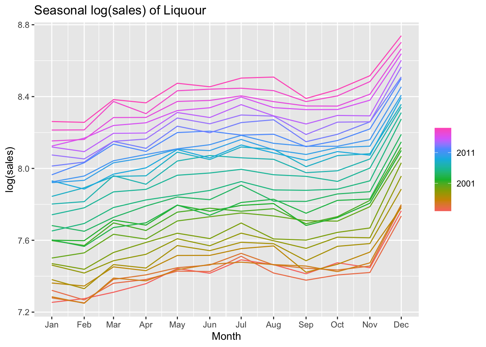
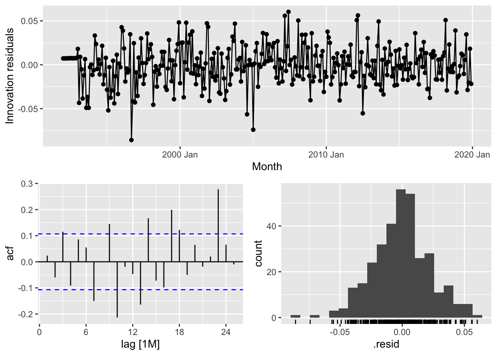
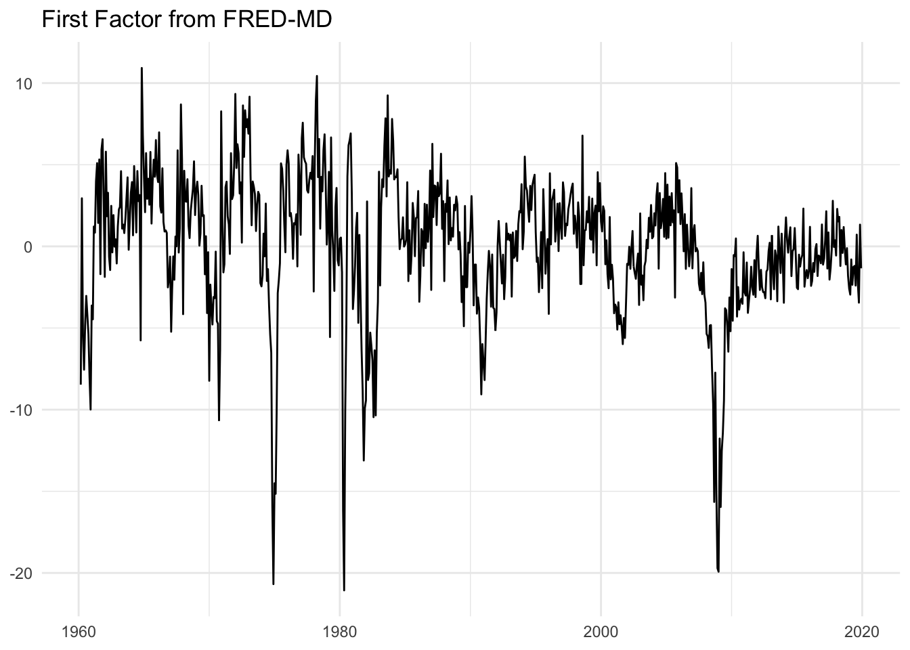

liquor |>gg_season(log(sales)) +labs(title ="Seasonal log(sales) of Liquour")

In a few sentences: describe the trend and the seasonal pattern. Which months are high and which are low? Do the seasonal swings grow with the level of the series, and what does that suggest about using logs?
Response:
The general trend is upwards. The lowest months are Jan/Feb and highest months are Nov/Dec. The seasonal swings do grow with the level of the series which means that logs can help us unmask actual behavior by turning the multiplicative behavior and making it additive.
Which specification was chosen for each model? In words: what does the chosen ARIMA say about how the series was differenced? What do the three letters of the chosen ETS say about its error, trend, and seasonal components?
Response: For ARIMA, this is what we get:
Model: ARIMA(1,0,2)(2,1,1)[12] w/ drift
This is a seasonal ARIMA with one seasonal difference. Our m = 12 so were working with monthly data.
Our ETS model is ETS(A,A,A). This means we have an additive trend, error, and seasonality. This is the Additive Holt-Winters model and additive on the log scale works as multiplicative on the original scale.
2.2b
Check the residuals of the ARIMA model with gg_tsresiduals() and a Ljung–Box test at lag 24. Fill in dof with the number of estimated AR and MA coefficients ((p + q + P + Q)) in the model chosen in 2.2a
liquor_fit |>select(arima) |>gg_tsresiduals()

# p = 1, P = 2, q = 2, Q = 1, TOTAL = 6liquor_fit |>select(arima) |>augment() |>features(.innov, ljung_box, lag =24, dof =6)
# dof literally stands for "degrees of freedom", which for ARIMA, is calculated with teh formula provided above: p + q + P + Q
Do the residuals look like white noise? Failing this test doesn’t tell us that a model will forecast badly, only that there may be structure left to capture. The horse race below will tell us how well the model actually forecasts.
Response: In the acf graph, I see some pass the blue boundaries set. There also seems to be some kind of pattern or trend there. I would say there is definitely some signal/structure left for our model to capture. We also get a p-value around 0 so we reject white noise.
If you come back to this later in a new R session, you can restore the fitted models without re-running the TS-CV by replacing the liquor_cv_fit definition above with liquor_cv_fit <- readRDS(“results/liquor_cv_fit.rds”).
liquor_cv_fit <-readRDS("results/liquor_cv_fit.rds")# to save this since it takes so long to run
How many different forecast origins will be considered in this TS-CV?
Response: Total of 216 origin points being considered for this TS-CV.
nrow(liquor_cv_fit)
[1] 216
2.3b
Produce the one-month-ahead forecasts and compute their accuracy.
What are the dates of the first and last forecasts? Report the accuracy results in a table.
Response: So we want the last months of the first .id and last .id. The first forecast is 2002 January, the last forecast is 2019 December. The ARIMA models perform the best across both RMSE and MAE error metrics. It has 81.4 RMSE and a 65.65 MAE. ETS peforms a little worse with a 94.3 RMSE and a 72 MAE. Snaive does the worst with a very high RMSE of 161 and MAE of 136.
nrow(liquor_cv_fc)
[1] 648
first_id = liquor_cv_fc |>filter(.id ==1)first_id_fc = first_id$Month[1] # all have the same months so I just grabbed itlast_id = liquor_cv_fc |>filter(.id ==216)last_id_fc = last_id$Month[1]glue("First forecast month: {first_id_fc}")
First forecast month: 2002 Jan
glue("Last forecast month: {last_id_fc}")
Last forecast month: 2019 Dec
2.4. Are the Differences Significant?
Use a Diebold–Mariano test with squared error loss (power = 2) to test whether ARIMA and ETS are equally accurate:
liquor_errs <- liquor_cv_fc |>as_tibble() |>left_join(as_tibble(liquor) |>select(Month, actual = sales),by ="Month") |>mutate(e = actual - .mean) |>select(Month, .model, e) |>pivot_wider(names_from = .model, values_from = e)# arima vs etsforecast::dm.test(liquor_errs$arima, liquor_errs$ets, h =1, power =2)
Diebold-Mariano Test
data: liquor_errs$arimaliquor_errs$ets
DM = -2.9062, Forecast horizon = 1, Loss function power = 2, p-value =
0.004042
alternative hypothesis: two.sided
Next, modify the code above to run the same test comparing ARIMA to the seasonal random walk benchmark.
Code doing ARIMA vs Snaive:
# should just copy this line and swich out the models? # arima vs snaiveforecast::dm.test(liquor_errs$arima, liquor_errs$snaive, h =1, power =2)
Diebold-Mariano Test
data: liquor_errs$arimaliquor_errs$snaive
DM = -10.755, Forecast horizon = 1, Loss function power = 2, p-value <
2.2e-16
alternative hypothesis: two.sided
In two or three sentences: what do you conclude? If you were the liquor store chain, which model would you use?
Respone:
For the ARIMA vs ETS model, we get a DM = -2.9062 and a p-value of 0.004042. For the ARIMA vs Snaive model, we get a DM = -10.755 and a p-value of p-value < 2.2e-16. In both cases, (where DM is negative) the first ARIMA model had higher accuracy and we see a greater difference in ARIMA vs Snaive. We get a low pvalue for ARIMA vs ETS but an almost zero p-value between ARIMA vs Snaive which means that there is a statistically significant difference in accuracy between both models so I would use ARIMA.
Part 3 – Forecast Combination
3a
As we saw in class, a forecast combination in fable is just arithmetic on the fitted models. Create an equal-weight combination of ARIMA and ETS:
Report the results in a table. How does combo compare to each of the models that go into it?
Respone: The combo results are very close to ARIMA and outperform ETS and Snaive. ARIMA has an RMSE of 81.4 and an MAE of 65.65 and combo errors are very close with RMSE of 85.19 and MAE of 66.76.
3b
cor(liquor_errs$arima, liquor_errs$ets)
[1] 0.8782934
Based on this correlation, and on the DM test in 2.4, explain in two or three sentences why the combination did or did not beat the best individual model.
Response: The combination did not beat the best ARIMA model. This is probably because the errors being made by both models are too similar. The correlation of 0.88 is very high so the errors did not cancel each other out. ARIMA is significantly more accurate than ETS.
Part 4 – A Medium-Scale VAR vs. a BVAR
4.1. The Data
Reading in the downloaded FRED-QD data from canvas.
Set up the TS-CV. Our first training sample is the first 120 quarters, 1960 Q1–1989 Q4, and we then forecast one quarter ahead with an expanding window:
N <-nrow(y) # 240origins <-120:(N -1)actual <- y[121:N, ]glue("Origins: {length(origins)}")
Origins: 120
glue("Actual: {length(actual)}")
Actual: 960
How many forecasts will we produce for each variable, and what are the dates of the first and last forecast?
Response: 120 forecasts for each of the 8 variables. So that means 960 (120 x 8 = 960) actual total forecasted values across the origins.
The actual training data is from 1960-1989, so our first actual forecast is is the first quarter in 1990 (year right after training window) and our last forecast is the final quarter of the last year of all the data. So the first date is 1990-03-01 and the last date is 2019-12-01
all_dates <-filter(qd, date >as.Date("1989-12-01"))all_dates
var_ols_fc <-function(z, p) { e <-embed(z, p +1) # columns: y_t, then its lags 1 to p M <-ncol(z) # number of variables B <-coef(lm(e[, 1:M] ~ e[, -(1:M)])) x <-c(1, t(z[nrow(z):(nrow(z) - p +1), ])) # constant, latest p lags x %*% B}fc_var1 <-NULLfc_var4 <-NULLfor (T in origins) { fc_var1 <-rbind(fc_var1, var_ols_fc(y[1:T, ], 1)) fc_var4 <-rbind(fc_var4, var_ols_fc(y[1:T, ], 4))}
Which VAR forecasts better? For how many of the eight variables? Given that the VAR(4) contains the VAR(1) as a special case, why might the smaller model forecast better?
Response: VAR(1) performed better with lower RMSE values across 7 of the 8 variables. Smaller models forecast better because adding lags adds estimation error that outweighs gains from the longer lags.
4.3. A BVAR
4.3a
bvar_cv <-function(lambda) { pr <-bv_priors(hyper ="lambda",mn =bv_mn(lambda =bv_lambda(mode = lambda, sd =0.4,min =0.999* lambda,max =1.001* lambda),b =0)) fc <-NULLfor (T in origins) { fit_T <-bvar(y[1:T, ], lags =4, priors = pr,n_draw =2000, n_burn =1000, verbose =FALSE) x <-c(1, t(y[T:(T -3), ])) # constant and 4 lags of each variable fc <-rbind(fc, x %*%coef(fit_T)) # forecast of y_{T+1} } fc}set.seed(422)fc_bvar_03 <-bvar_cv(0.3)saveRDS(fc_bvar_03, "results/fc_bvar_03.rds")
How does the BVAR(4) with (= 0.3) compare to the OLS VAR(4)? Both have the same variables and the same lags, so what explains any difference?
How does it compare to the VAR(1)?
What happens when (= 0.05)? What does this tell you about the amount of shrinkage? Suppose you used this table to choose your forecasting model. Would the winner’s RMSE here be a fair estimate of how accurately it will forecast in the future? Why or why not?
Response: BVAR(4) with a lambda of 0.3 performs a little better than OLS VAR(4) with a value of 0.539 compared to 0.569. Since OLS with VAR(4) has a lot of coefficients, there is greater room for estimation error. A lambda of 0.3 is is really modest shrinkage, so there isn’t that much of an improvement in terms of estimation.
VAR(1) still outperforms on most variables. However, BVAR(4) with a lambda of 0.3 actually has a lower error results for some of the variables like gs10 and inv. This seems to indicate that simpler models perform better.
Lambda of 0.05 is extreme shrinkage which actually leads to higher MSE in a lot of cases. This means that the model is ignoring important signal form the data. The winners RMSE wouldn’t be a fair estimate since we would need to see how it does on the actual testing data. After seeing how it performs, then we could see if the model actually holds up or if it was just over-fitting to the data.
4.3c
For GDP growth, test whether the VAR(4) and the BVAR(4) with (= 0.3) are equally accurate, using a Diebold–Mariano test with squared error loss. Then write the code to repeat the test for a second variable of your choice (i.e. not GDP growth). What do you conclude? How does this affect how you think about your results in 4.3b?
e_var4 <- actual[, "gdp"] - fc_var4[, 1]e_bvar <- actual[, "gdp"] - fc_bvar_03[, 1]forecast::dm.test(e_var4, e_bvar, h =1, power =2)
Diebold-Mariano Test
data: e_var4e_bvar
DM = 2.1366, Forecast horizon = 1, Loss function power = 2, p-value =
0.03468
alternative hypothesis: two.sided
The forecast matrices have the same column order as y, so column 1 is gdp. To test a different variable, change both the name and the column number in each line.
I wanted to test on inflation (I am pretty sure its column 5):
e_infl_var4 <- actual[, "infl"] - fc_var4[, 5]e_infl_bvar <- actual[, "infl"] - fc_bvar_03[, 5]forecast::dm.test(e_infl_var4, e_infl_bvar, h =1, power =2)
Diebold-Mariano Test
data: e_infl_var4e_infl_bvar
DM = 1.4529, Forecast horizon = 1, Loss function power = 2, p-value =
0.1489
alternative hypothesis: two.sided
Response: For GDP growth, I got a DM = 2.1366 and a p-value of 0.0346. At a 5% significance level, we would say there is something statistically significant about the difference and that the BVAR(4) with lambda = 0.3 is more accurate.
For inflation, I got a DM = 1.4529 with a p-value of 0.1489. At the 5% significance level, this fails to be statistically significant so the difference could be due to something else that doesn’t involve the model. Despite the BVAR having lower RMSE for the variables, we can’t reject equal accuracy. Maybe there is some kind of sampling noise or some other factor at play. Ultimately, I wouldn’t trust the rankings from 4.3b.
Part 5 – A Factor Model with FRED-MD
5.1. The Data
5.1a
md_raw <-read_csv("data/fredmd_2026-09.csv", show_col_types =FALSE)tcode <-unlist(md_raw[1, -1])md <- md_raw[-1, ] |>mutate(date =as.Date(sasdate, "%m/%d/%Y"))transform_series <-function(x, code) { d <-function(v) c(NA, diff(v))switch(as.character(code),"1"= x, # level"2"=d(x), # first difference"3"=d(d(x)), # second difference"4"=log(x), # log"5"=100*d(log(x)), # growth rate"6"=100*d(d(log(x))), # change in the growth rate"7"=d(x / dplyr::lag(x) -1))}
5.1b
Apply the transformations, keep the same sample as in class (March 1960–December 2019), and drop any series with missing values in that sample. You should end up with 718 rows and 122 columns (the date and 121 series).
fm <-map2_dfc(md[names(tcode)], tcode, transform_series) |>mutate(date = md$date, .before =1) |>filter(date >=as.Date("1960-03-01"), date <=as.Date("2019-12-01"))fm <- fm[, colSums(is.na(fm)) ==0]dim(fm)
[1] 718 122
# fm
5.1c
Run tcode[c(“INDPRO”, “PAYEMS”, “CPIAUCSL”, “FEDFUNDS”)]. In a sentence for each: how is each of these four series transformed? Why do you think the transformation chosen for FEDFUNDS differs from the one for INDPRO?
Response: So each code corresponds to a transformation that is being applied.
INDPRO and PAYEMS are transformed by applying the growth rate function to them so we observe can observe them without trend over time.
For CPIAUCSL, we take the change in the growth rate.
For FEDFUNDS, we apply the first difference which takes out the trend as well. FEDFUNDS is already measured in percent whereas INDPRO is an index that trends upwards. A % change in a % doesn’t mean much so taking a simple difference gives us a change in percentage points.
5.2. Estimate the Factors
5.2a
Estimate the factors by principal components, and find the share of the variation they explain:
Z <- fm |>select(-date) |>as.matrix()pc <-prcomp(scale(Z))summary(pc)$importance[, 1:5]
What share of the variation in all 121 series do the first three factors explain? This should match the result we saw in class.
Response: We see the first three principal components (PC1, PC2, and PC3) explain 29.4530 % of the variation.
5.2b
F1 <- pc$x[, 1] *sign(cor(pc$x[, 1], fm$INDPRO))tibble(date = fm$date, F1 = F1) |>ggplot(aes(date, F1)) +geom_line() +labs(title ="First Factor from FRED-MD", x =NULL, y =NULL) +theme_minimal()

5.2c
Find the eight series most correlated with each of the first two factors:
For PC1, here are the series that correlate the most with it:
All Employees: Total nonfarm, Industrial production: manufacturing, All employees: goods-producing industries, Industrial production index, All employees: manufacturing, Industrial production: final products and nonindustrial supplies, Capacity utilization: manufacturing, All employees: durable goods
Every one of these captures employment or industrial capacity. Its tracking things in the business cycle like production, manufacturing, and jobs.
For PC2, here are the series that correlate the most with it:
CPI: commodities, PCE price index: nondurable goods, CPI: all items less shelter, CPI: all items, CPI: all items less medical care, CPI: transportation, PCE price index, CPI: all items less food
This PC2 is capturing prices or inflation factors for goods commodities, nondurable goods, and transportation.
5.3. Replicate the Horse Race from Class
ip <- fm$INDPROn <-nrow(Z)init <-which(fm$date ==as.Date("1989-12-01"))e_ar <-NULLe_fa <-NULLfor (T in init:(n -1)) { F_T <-prcomp(scale(Z[1:T, ]))$x[, 1:3] # factors using data through T d <-data.frame(y_next = ip[2:T], y = ip[1:(T -1)], F_T[1:(T -1), ]) new <-data.frame(y = ip[T], t(F_T[T, ])) e_ar <-c(e_ar, ip[T +1] -predict(lm(y_next ~ y, d), new)) e_fa <-c(e_fa, ip[T +1] -predict(lm(y_next ~ ., d), new))}c(RMSE_AR =sqrt(mean(e_ar^2)), RMSE_FA =sqrt(mean(e_fa^2)))
RMSE_AR RMSE_FA
0.6168431 0.5887272
In class we saw an RMSE of 0.617 for the AR(1) and 0.589 with the factors. Confirm that you get the same numbers. Why would it be cheating to estimate the factors once, using the full sample, and use those in the horse race?
Response: For RMSE_AR I get 0.6168431 and for RMSE_FA I get 0.5887272 which match what we got in class. If we take advantage of the full sample, we have information leakage. Information that wouldn’t otherwise be available in real time when this was being forecasted would leak into the model. This is cheating because we would construct a more accurate model with future information.
5.4. A Direct Forecast of Inflation
direct_race <-function(series, h =12, r =3) { lv <- md |>mutate(log_x =log(.data[[series]]),g =100* (log_x -lag(log_x))) |>filter(date >=as.Date("1960-03-01"), date <=as.Date("2019-12-01")) yh <-100* (lead(lv$log_x, h) - lv$log_x) # growth over the next h months g <- lv$g # growth over the latest month e_ar <-NULL e_fa <-NULLfor (T in init:(n - h)) { F_T <-prcomp(scale(Z[1:T, ]))$x[, 1:r, drop =FALSE] i <-1:(T - h) d <-data.frame(yh = yh[i], g = g[i], F_T[i, , drop =FALSE]) new <-data.frame(g = g[T], F_T[T, , drop =FALSE]) e_ar <-c(e_ar, yh[T] -predict(lm(yh ~ g, d), new)) e_fa <-c(e_fa, yh[T] -predict(lm(yh ~ ., d), new)) }tibble(series, forecasts =length(e_ar),RMSE_AR =sqrt(mean(e_ar^2)), RMSE_FA =sqrt(mean(e_fa^2)),MAE_AR =mean(abs(e_ar)), MAE_FA =mean(abs(e_fa)),DM_pvalue = forecast::dm.test(e_ar, e_fa, h = h, power =2,varestimator ="bartlett")$p.value)}direct_race("CPIAUCSL")
Because 12-month-ahead forecasts overlap, their errors are autocorrelated. The h = h and varestimator = “bartlett” options adjust the DM test for this.
Do the factors improve the forecast of 12-month CPI inflation? By what percentage do they reduce the RMSE? Is the difference statistically significant?
Response: The factors cut RMSE down by ~10.2% which drops from 2.107908 to 1.893703 and with such a low p-value of 0.0004426979, the differences are definitely statistically significant at both a 5% significance level and a 1% significance level. So this factor model is definitely more accurate.